Nuestra Ruta
De Homps a Port Cassafières navegando por el tramo más hermoso del Canal du Midi, declarado Patrimonio de la Humanidad por la UNESCO en 1996.
📍 Mapa General del Canal
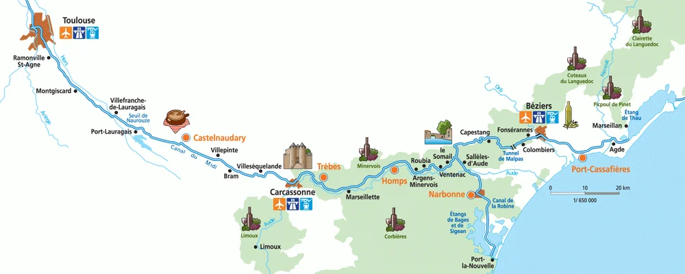
El Canal du Midi conecta el Mediterráneo con el Atlántico a través de 240 km de vías fluviales históricas.
🛥️ Nuestro Recorrido Exacto

Inicio: Homps
Paradas: Argens-Minervois, Le Somail, Capestang, Béziers
Final: Port Cassafières
Cómo Llegar
📅 Día de Llegada: Lunes 22 Junio 2026
- Check-in: 15:00 - 17:00h en Homps
- Briefing obligatorio: Después del check-in
- Primera noche: Amarrados en Homps (no navegaremos el lunes)
✈️ Opción 1: Tren (Recomendado)
- Barcelona/Madrid → Narbonne (AVE/Renfe)
- Narbonne → Lézignan-Corbières (15 min tren)
- Taxi Lézignan → Homps (20 min, ~25€)
✈️ Opción 2: Avión + Coche
- Aeropuerto Carcassonne (40 km)
- Aeropuerto Toulouse (150 km)
- Aeropuerto Béziers (50 km)
- Alquiler coche o transfer privado
🚗 Opción 3: Transfer
- Transfer privado: 130€/barco
- Parking en Homps: 40€/semana
- Servicio puerta a puerta
Itinerario Día a Día
Lunes 22 Junio - HOMPS
📍 Llegada y Primera Noche
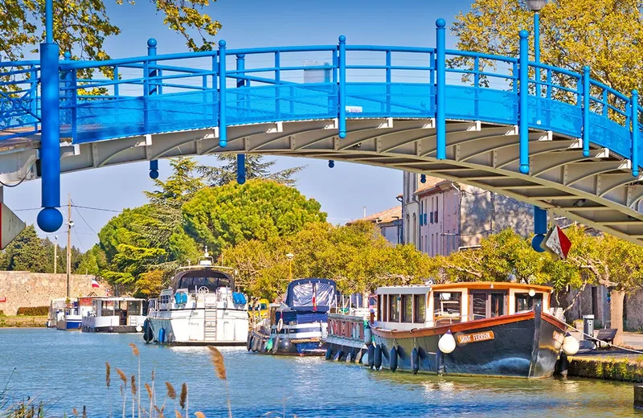
✨ Qué hacer en Homps:
- Torre de los Caballeros: Antigua fortaleza del Temple
- 🍷 Maison des Vins: Cata de vinos Minervois (abierto hasta 18h)
- Lago Jouarres: Zona de baño a 15 min a pie
- Supermercado: Aprovecha para hacer compra grande
Martes 23 Junio - ARGENS-MINERVOIS
🛥️ Homps → Argens (20 km, 0 esclusas, 2h)
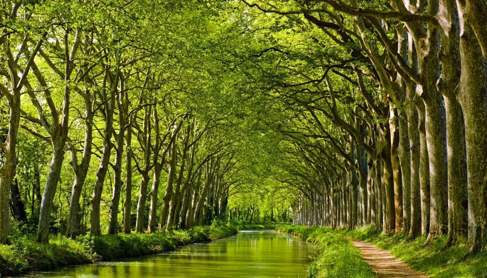
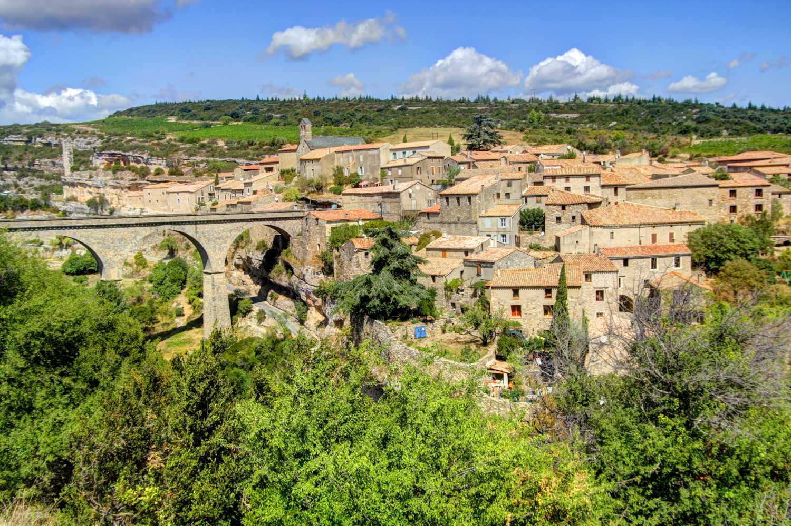
🏰 IMPRESCINDIBLE: Excursión a Minerve
A 12 km en taxi/coche - Uno de los pueblos más bellos de Francia
- Ciudad cátara fortificada en lo alto de un promontorio
- Gargantas espectaculares del río
- Puentes naturales de piedra
- Restaurantes con vistas panorámicas
- Historia medieval fascinante
Miércoles 24 Junio - LE SOMAIL
🛥️ Argens → Le Somail (18 km, 0 esclusas, 2h)
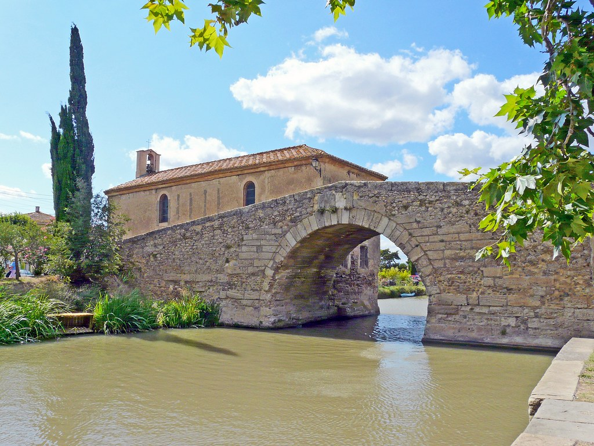
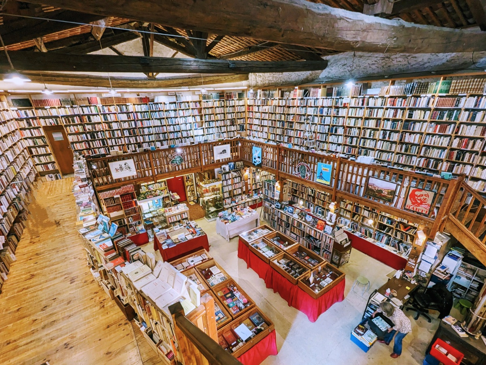
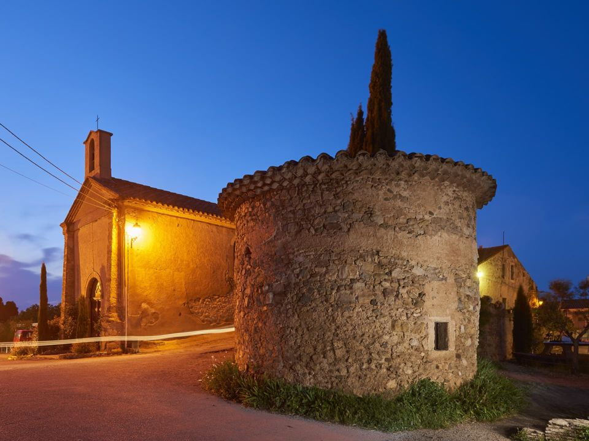
⭐ EL PUEBLO MÁS BONITO DE LA RUTA ⭐
Le Somail es una joya del Canal du Midi que debes explorar a fondo
📚 Imprescindibles de Le Somail:
- Puente Saint-Marcel: Foto icónica del canal con su arco perfecto
- Le Trouve-Tout du Livre: Catedral de 50.000 libros antiguos en bodega histórica
- Maison Bonnal: Museo interactivo con holograma de Mrs. Cradock (viajera s.XVIII)
- Capilla de los Bateliers: Del siglo XVII, para pasajeros del canal
- La Glacière: Torre de hielo de 1864 - única que queda en el canal
- 🍽️ Comptoir Nature: Restaurante eco en terraza junto al agua
- 🚴 Alquiler de bicis: Explorar el camino de sirga
- 🛶 Barcos eléctricos: Paseos en embarcaciones pequeñas
Jueves 25 Junio - CAPESTANG
🛥️ Le Somail → Capestang (15 km, 1-2 esclusas, 2h)
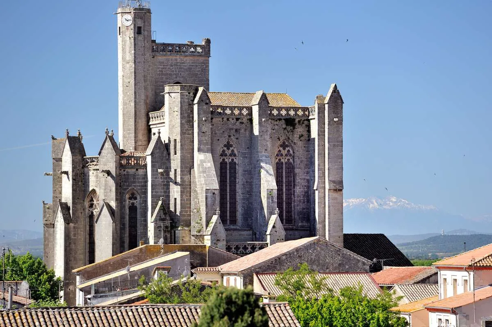
🏰 Qué ver en Capestang:
- Colegiata gótica de St-Étienne (impresionante)
- Plaza principal con terrazas acogedoras
- Château de Capestang
- Mercado local (si coincide el día)
- Tiendas artesanales
Viernes 26 Junio - FONSERANNES & BÉZIERS
🛥️ Capestang → Colombiers/Béziers (24 km, ~15 esclusas, 4-5h)
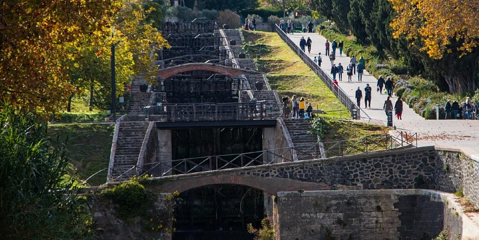
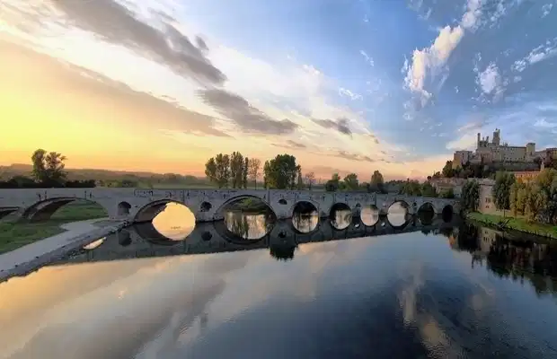
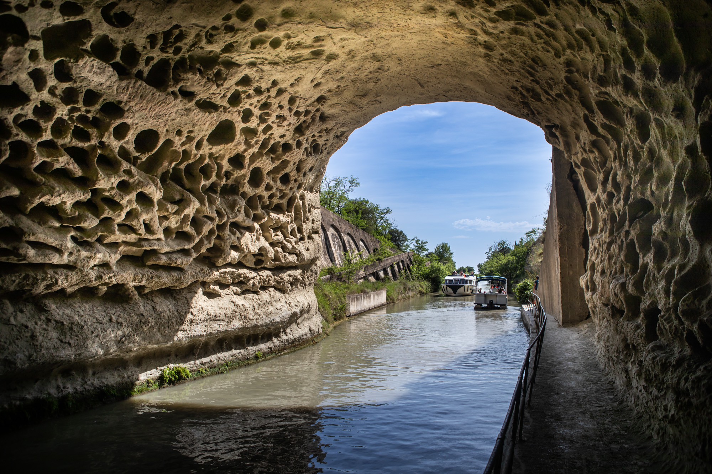
🌟 LA JOYA DE LA CORONA 🌟
LAS 9 ESCLUSAS DE FONSERANNES
3er sitio turístico más visitado de Languedoc-Rosellón
⚠️ INFORMACIÓN CRÍTICA - FONSERANNES:
- 8 cámaras ovales + 9 puertas en escalera
- Desnivel: 21,5 metros en 300 metros
- Tiempo de paso: 30-45 minutos
- ⏰ HORARIOS ESTRICTOS: Slots fijados - Si llegas tarde, esperas HORAS
- Llegar 30 min ANTES del slot asignado
- Construidas 1676-1680 por Pierre-Paul Riquet
- Los escluseros gestionan todo el proceso
- Experiencia INOLVIDABLE - Los niños lo flipan
🎯 Después de Fonserannes:
- Túnel de Malpas: 160m - Primer túnel navegable del mundo (1679)
- Acueducto del Orb: 7 arcos, 240m largo, 12m alto - Vistas increíbles
- Béziers: Catedral Saint-Nazaire con vistas panorámicas
Sábado 27 Junio - PORT CASSAFIÈRES
📍 Llegada y entrega a las 09:00h
🏖️ Después del check-out:
- Port Cassafières está a 1,8 km de Playa La Redoute
- Posibilidad de pasar el día en la playa del Mediterráneo
- Restaurantes y chiringuitos cerca del puerto
Consejos Prácticos
🔐 Esclusas:
- Velocidad lenta al entrar
- Cuerdas preparadas
- Una persona delante, otra detrás
- NUNCA atar cuerdas fijas al barco
- Sujetar con manos y ajustar según sube/baja
- Los escluseros siempre ayudan
⚓ Amarrar:
- Podéis amarrar casi en cualquier sitio
- No bloquear camino de sirga
- Usar estacas y cuerdas del barco
- Puertos tienen electricidad y agua
🛒 Abastecimiento:
- Homps: Supermercado grande
- Le Somail: Tienda flotante
- Capestang: Tiendas locales
- Mercados locales según día
⛽ Combustible:
- Pago por horas: ~19€/hora navegada
- O ilimitado: 340€ por barco
- Anticipo 260€ (devuelven lo no usado)
Presupuesto
Coste Base (por barco x2):
| Concepto | Por Barco | Total (2 barcos) |
|---|---|---|
| Alquiler base | 2.174€ | 4.348€ |
| Primer pago (50%) | 1.087€ | 2.174€ |
| Segundo pago | 1.087€ | 2.174€ |
Extras Recomendados:
| Extra | Precio | Recomendación |
|---|---|---|
| Reducción franquicia daños | 205€ | ⭐⭐⭐ Muy recomendado |
| Pack combustible + franquicia | 520€ | ⭐⭐⭐ Conveniente |
| Bicicletas estándar | 40€ | ⭐⭐⭐ Imprescindible |
| Bicis niños | 30€ | ⭐⭐⭐ Si tenéis niños |
| Barbacoa | 37,50€ | ⭐⭐ Agradable |
| WiFi | 40€ | ⭐ Opcional |
💰 Coste Total Estimado
2 barcos con extras recomendados + comidas y excursiones
Los Highlights del Viaje
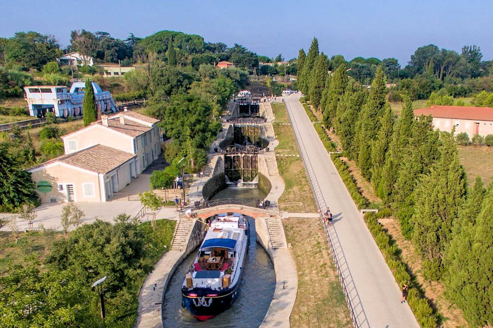
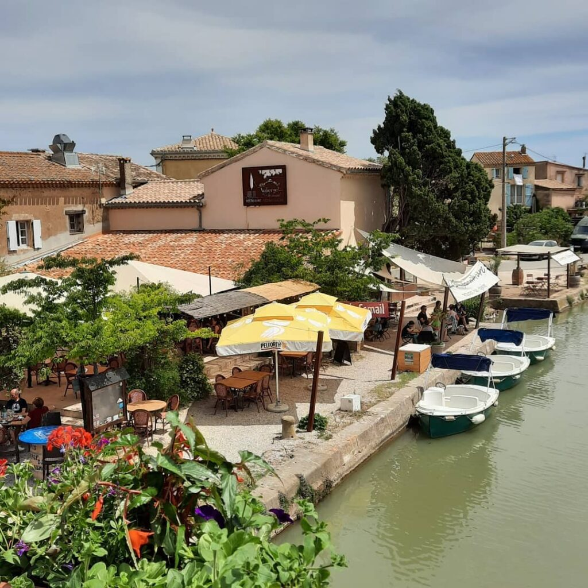
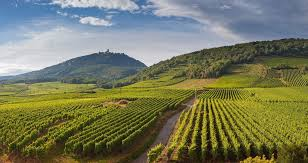

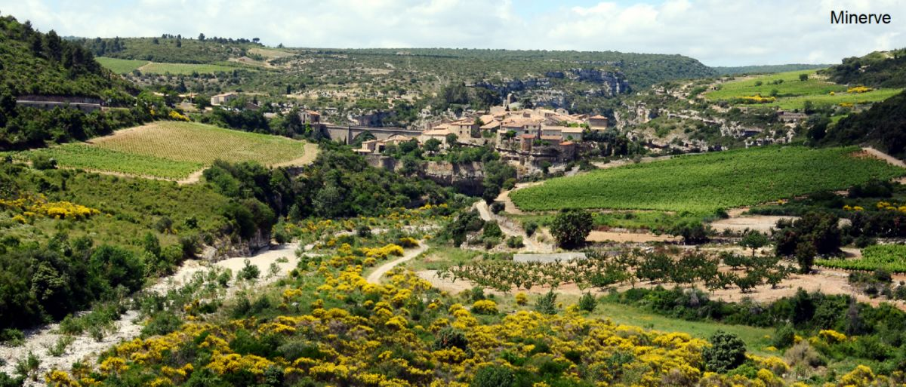
Gastronomía del Canal du Midi
El sur de Francia es un paraíso gastronómico. Desde el cassoulet hasta los vinos de Minervois, cada pueblo ofrece sabores auténticos y productos locales.
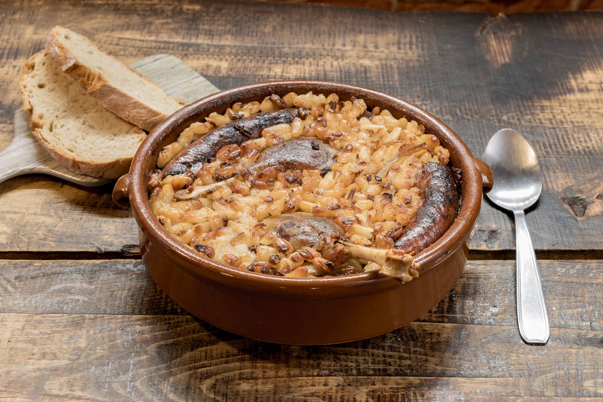

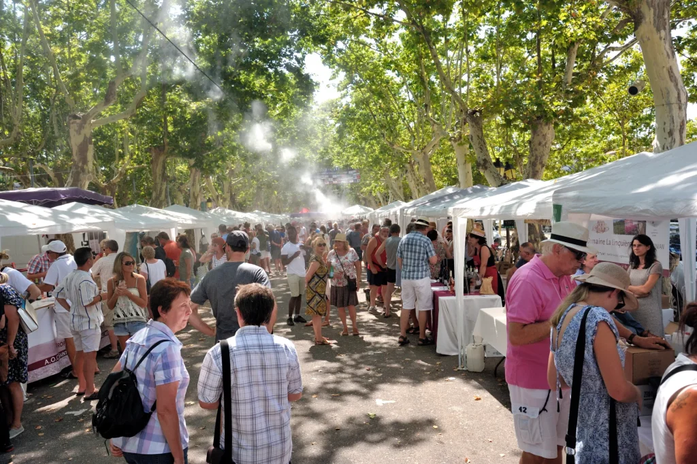
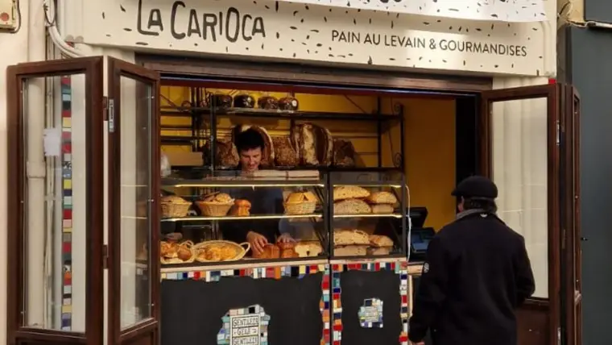
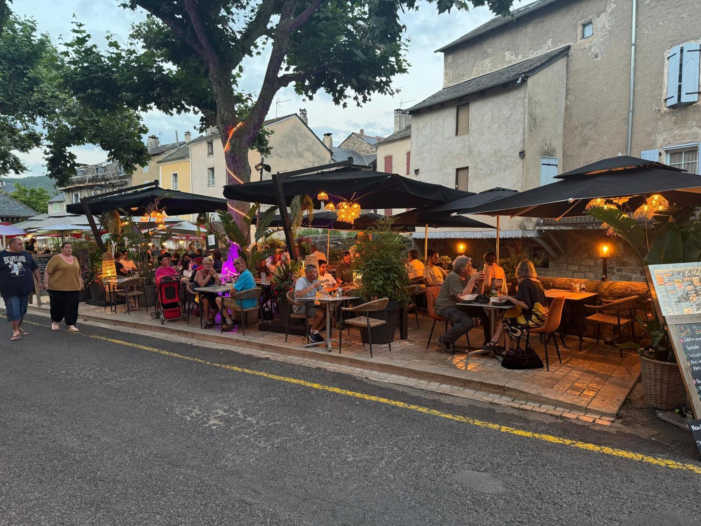
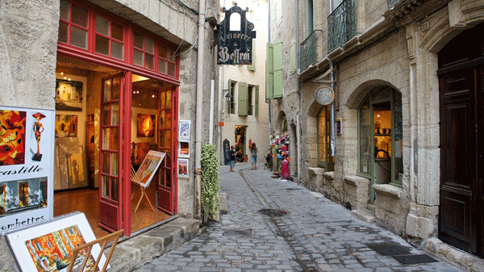
🍷 Restaurantes Recomendados por National Geographic:
- Le Péniche (Homps): Cassoulet, caracoles borgoñones, pizzas artesanales. Jardín trasero encantador.
- Le Comptoir Nature (Le Somail): Productos eco, frutas/verduras cultivadas in situ. Foie gras casero, brandada de bacalao.
- OKN9 (Paraza): Estilo retro, pareja franco-inglesa. Famoso risotto con vieiras.
- Château de Paraza: Tours de bodega con cata de vinos. Recomendado: "Été indien" (vino naranja).
- Château de Ventenac: Bodega estilo catedral, catas gratuitas. Torre con vistas al atardecer.
Curiosidades del Canal du Midi
🏆 Récords que navegaréis:
- Tramo sin esclusas más largo: 53 km (Argens-Fonserannes) ¡Lo navegaréis!
- Escalera de esclusas más larga: Fonserannes ¡La cruzaréis!
- Primer túnel navegable del mundo: Malpas (1679) ¡Lo atravesaréis!
- Canal más antiguo de Europa aún en funcionamiento
Checklist Pre-Viaje
2 semanas antes:
- Confirmar reserva y pagos
- Reservar transfer/transporte
- Contratar extras deseados
- Seguro de viaje (recomendado)
1 semana antes:
- Preparar playlist para el barco
- Descargar mapas offline
- Lista compra supermercado
- Reservar restaurantes populares
Día antes:
- Revisar meteorología
- Preparar documentación (DNI)
- Maletas blandas (mejor que rígidas)
- Cargar móviles y cámaras
Día de embarque:
- Llegar 15:00-17:00h
- Copiar DNI + firmar docs
- Pagar fianza
- Atender briefing completo
- Compra grande en Homps
Clima en Junio
🎒 Qué llevar:
- Protector solar SPF50+
- Gorras y gafas de sol
- Ropa ligera + abrigo para noches
- Bañadores
- Calzado antideslizante
- Toallas de baño
- Botiquín básico
¡Listos para la Aventura!
Una experiencia familiar inolvidable navegando por el canal más hermoso de Europa